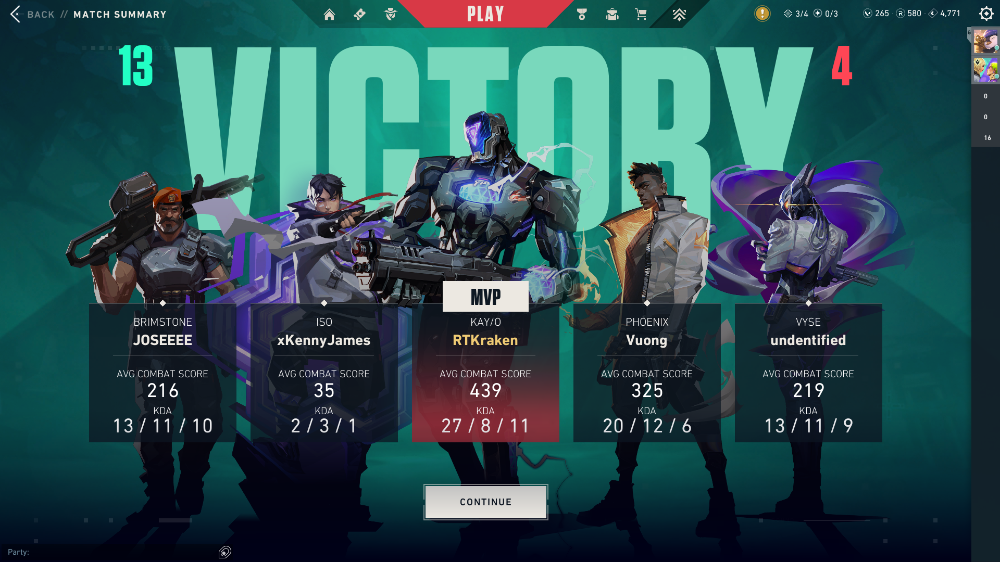

There's more to me than studying and spending time in front of a
computer. From discovering how things work to getting lost in games,
music, and stories, these are some of the things that make my days
more interesting.
Two interests I always find myself coming back to.
01 / DISCOVER & LEARN
Technology & Computers
I've always been curious about what goes on inside computers and
how hardware and software work together. I enjoy learning about
computer components, exploring new technology, and developing my
programming skills.
Seeing a friend's Arduino Uno project made me even more interested
in creating something of my own someday. There's still so much I
want to learn, and that's what makes technology exciting to me.
Computer HardwareProgrammingArduino
curiosity.cs
string interest =
"Technology";
bool stillLearning =
true;
while (stillLearning) {
Explore();
KeepImproving();
}
</>
02 / PLAY & EXPLORE
Gaming & Adventures
Gaming is one of my favorite ways to unwind. Sometimes I enjoy the
competitive side of Valorant, and other times I just want to
explore, build, or have fun with friends in Minecraft and Roblox.
I also enjoy osu! Each game brings something different, whether
it's a challenge, a new world to explore, or a memorable moment
with friends.
ValorantMinecraftRobloxosu!
Watch a Minecraft moment (9 seconds)
IN MY ELEMENTPlay. Explore. Repeat.
BEYOND THE SCREEN
A little bit of everything.
The small things that turn an ordinary day into a good one.
03 / LISTEN♫
Music for Every Mood
My playlist doesn't stick to just one genre. From IV OF SPADES and
Daniel Caesar to genggeng tracks and random discoveries, I listen
to whatever catches my ear. Aside from listening, I also enjoy
playing the guitar and learning new things along the way.
No fixed genre. Just good music.
04 / WATCH▣
Movies, Series & Anime
I enjoy watching stories unfold, whether it's a movie, a series,
or an anime. I love the excitement of finding something new and
having a show or film to look forward to.
Always looking for the next good watch.
05 / READ▤
Stories on the Page
Reading manhwa is another way I like to spend my free time.
Lookism and Wind Breaker are among the stories that keep me
hooked, especially when the characters and plot pull me in.
One more chapter... and then another.
06 / EXPERIENCE✳
Making Memories
I value the time I get to spend with my family and friends.
Whether we're hanging out, going somewhere, or simply laughing
together, it's usually the unplanned moments I remember most.
The best moments don't need a big plan.

A little competitionMusic and companyOutside, making memories
KEEP EXPLORING
There's more to the story.
These hobbies are just a part of who I am. Take a look at the things I
love and the moments I've collected along the way.